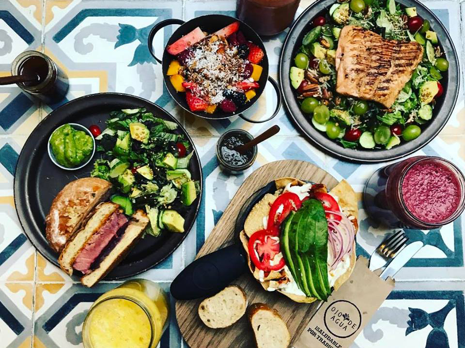

O programa Água Pura para Crianças da P&G
 English Español Português Indonesian Tiếng Việt Deutsch Français ไทย العربية زبانیں Doar Sobre Sobre nós A tecnologia de purificação de água Parceiros Premiações e Reconhecimento Como Ajudar Nossas histórias Fotos e Vídeos Galeria de fotos Galeria de Vídeos LÍNGUAS ENGLISH ESPAÑOL PORTUGUÊS INDONESIAN TIẾNG VIỆT DEUTSCH FRANÇAIS ไทย العربية زبانیں Doar
Vamos
compartilhar
o poder da
água pura
A campanha sem fins lucrativos “Água Pura para Crianças” da P&G fornece água potável para crianças e famílias necessitadas em todo o mundo.
Limpar Água Potável
Limpar Água Potável
Limpar Água Potável
Usando nossa inovação na categoria de Higiene e Limpeza
para gerar impacto
Desde 2004, a P&G forneceu mais de 17 bilhões de litros de água potável para pessoas necessitadas de todo o mundo. O programa fornece um sachê de purificação de água fácil de usar inventado pelos cientistas da Procter & Gamble que pode purificar 10 litros de água em apenas 30 minutos.
Saiba maisO PODER DA ÁGUA PURA
Com mais de 180 anos de experiencia criando produtos que melhoram a vida das pessoas no mundo todo, a P&G se orgulha de poder fornecer uma tecnologia de purificação de água que transforma a vida das famílias sem acesso a água potável.
Um clique = 1 dia agua pura
Saiba mais sobre as marcas da P&GCSDW ESTÁ PRONTO A ATIVAR
O PROGRAMA ÁGUA PURA PARA CRIANÇAS (CSDW PELA SUA SIGLA EM INGLÊS) TORNOU-SE PARCEIRO DA ACTIVATE
No último outono, o Programa Água Pura para Crianças teve o orgulho de ser apresentado na série documental ACTIVATE do canal National Geographic. Esta série de seis partes segue ativistas famosos, como a estrela Uzo Aduba, à medida que descobrem as causas subjacentes de problemas globais como pobreza, desigualdade e sustentabilidade.
LEIA MAISA
Tecnologia
Dentro de
um Pequeno
Sachê
Os cientistas da P&G inventaram a tecnologia do purificador de água da P&G, inovação que se tornou a base do programa gua Pura Para Crianças. Com apenas um balde, um bastão e um pano limpo, este pequeno sachê torna água suja e potencialmente mortal em água potável em apenas 30 minutos.
Saiba maisCSDW EM DESTAQUE NA SÉRIE “ACTIVATE” DA NATIONAL GEOGRAPHIC
CSDW EM DESTAQUE NA SÉRIE “ACTIVATE” DA NATIONAL GEOGRAPHIC
Read MoreBechibila Water Drop
CSDW EM DESTAQUE NA SÉRIE
ACTIVATE
DA NATIONAL GEOGRAPHIC
VER MAIS VÍDEOS Voltar ao topo undefined Doar Mapa do site PG.com Termos e Condições Privacidade Sobre Cookies Entre em contato Imprensa AdChoices Do Not Sell My Personal Information © 2020 Procter & Gamble DoarDoe
Sua doação pode transformar vidas fornecendo água limpa a crianças e famílias de todo o mundo. Por apenas US $ 7,50, você pode ajudar a fornecer água potável para uma criança por um ano.
Como Você Pode Ajudar